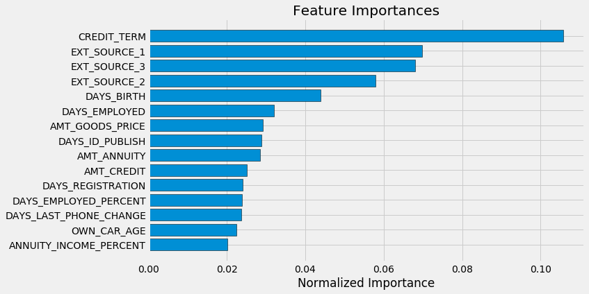

Gradient Boosting Machines
This loan company strives to broaden financial inclusion for the unbanked population by providing a positive and safe borrowing experience. In order to make sure this underserved population has a positive loan experience, the company makes use of a variety of alternative data--including telco and transactional information--to predict their clients' repayment abilities.
The objective is to use historical financial and socioeconomic data to predict whether or not an applicant will be able to repay a loan. This is a standard supervised classification task.
The models were evaluated on area under the ROC curve between the predicted probability and the observed target. A receiver operating characteristic curve, or ROC curve, is a graphical plot that illustrates the diagnostic ability of a binary classifier system as its discrimination threshold is varied. The ROC curve is created by plotting the true positive rate (TPR) against the false positive rate (FPR) at various threshold settings. The Gradient Boosting Machine (GBM) was top pick amongst machine learning models. The GBM is extremely effective on structured data - where the information is in rows and columns - and medium sized data sets - where there are at most a few million observations.
In order to build the baseline models with all the features available, I had to encode the categorical variables and normalize the range of features. Used Logistic regression, Random forest and Light gradient boosting machine algorithms with default settings for the base models. With the base models, I can get a first sense of the most important features: 
The model that performed the best was a LightGBM with Stratified KFold.
In order to fine tune the settings of this model, there are several approaches: manual, when you select the settings based on experience, intuition, and in some cases, is mostly guessing; automated, when you use a gradient descent or Bayesian optimization to search for the best ones; the grid and random search technique consists in setting up a matrix of hyper-parameters values and picking up combinations to test and score on a validation data set. The grid methods test all the possible combinations (which is computationally expensive and inefficient), while the other one picks up random combinations.
My strategy for finding the best settings for the model, was to split the data set and to use early stopping. What early stopping does, is exiting the training session when the validation error does not decrease for a specified number of iterations. After feature selection, the count of variables was close to 600, so I split the data into smaller data sets and tried all four approaches and then averaged the scores. The Random search and Bayesian optimization parameters where scoring the highest, so I applied a Random search to the full data set and used those hyper-parameters for the final model.
Resulted in a ROC AUC of 0.793.